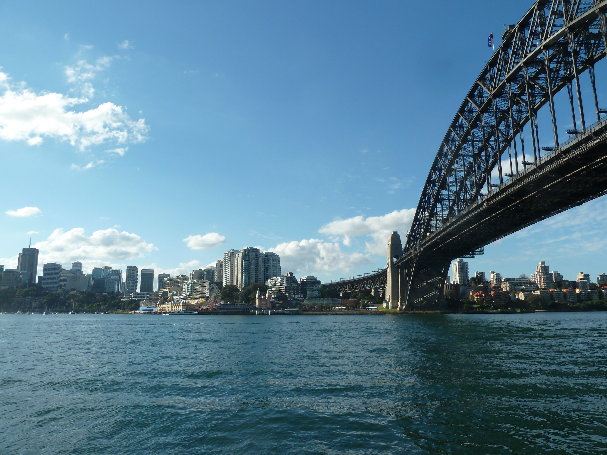
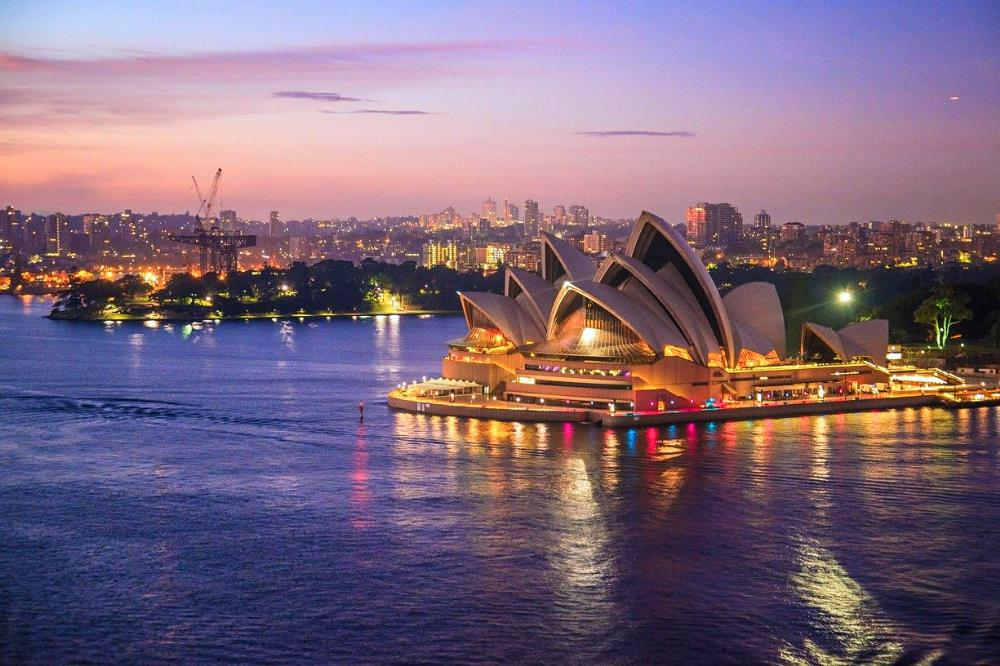
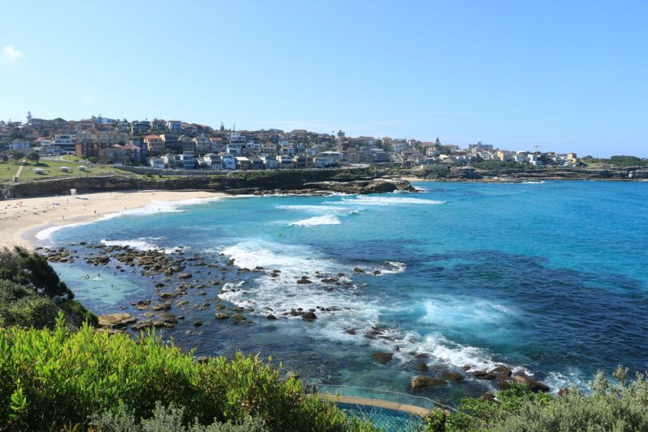
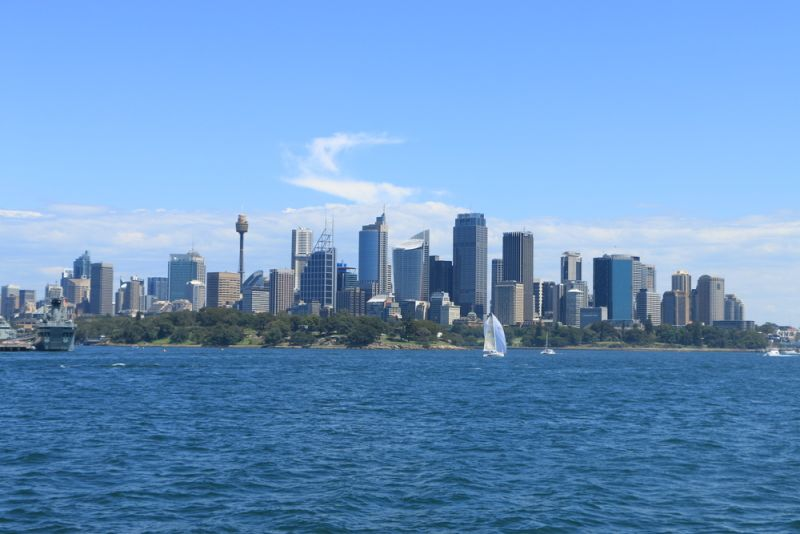
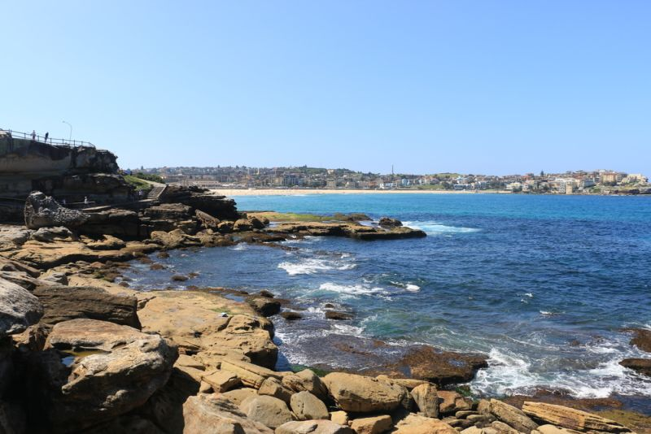
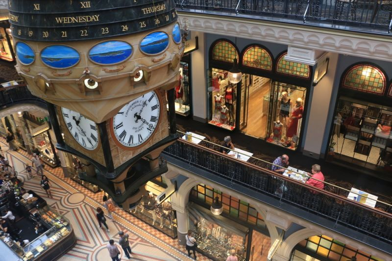

| Voltar para pagina inicial |
| Conhecendo Sydney |
Informações gerais de Sydney |
|
Quem está planejando estudar na Austrália cedo ou tarde se depara com um verdadeiro dilema: qual cidade escolher para fazer o intercâmbio? Afinal, são inúmeros municípios conhecidos, com diferentes aspectos culturais e estilos de vida e que, de quebra, atraem pessoas de diversas partes do mundo. Porém, basta uma pesquisa rápida na internet ou mesmo uma conversa com amigos que já tiveram essa experiência para que um lugar em especial se destaque e chame a sua atenção: Sydney. Justamente por isso, preparamos um post especial para mostrar o que está por trás da grande popularidade da cidade entre os estudantes internacionais e por que você deve escolhê-la como seu destino para uma temporada no exterior. ficou curioso? Então, acompanhe até o fim! |
Mapa: |
|  |
Como é o clima na Austrália/Sydney:
Para saber qual é o clima em Sydney é preciso, sem dúvidas, entender um pouco mais sobre o clima na Austrália como um todo. Devido à imensa extensão territorial dessa nação, ela é “dividida” em duas grandes regiões pelo Trópico de Capricórnio. Por conta disso, a parte norte — onde se encontram cidades como Darwin, Mackay, Townsville e Cairns — é bastante similar ao nordeste brasileiro. Ou seja, é uma zona tropical ensolarada e onde o verão costuma ser bem quente, com picos que ultrapassam 40 °C. Por outro lado, a parte sul — onde se encontram cidades como Brisbane, Camberra, Adelaide e, é claro, Sydney — se assemelha ao sul do Brasil. Logo, é uma zona temperada, com temperaturas mais agradáveis (média de 25 °C a 29 °C no verão, por exemplo) e uma maior presença de chuvas ao longo do ano. |
 |
O que ver e fazer em Sydney, Austrália |
| Para iniciar o roteiro pela cidade, comece pelo básico. Visite a Circular Quay, que é a área de onde saem embarcações para diversas partes da cidade. De um lado da Circular Quay fica a Sydney Opera House e, do outro, a Sydney Harbour Bridge, que são os dois principais pontos turísticos da cidade. A partir dessa região você pode ir para The Rocks, um bairro histórico muito charmoso e a partir dali subir a Harbour Bridge, que foi inaugurada em 1932. A ponte liga a área central de Sydney ao norte da cidade e, subindo a ela, tem-se de uma vista lindíssima de toda a cidade! Aos mais ousados, uma outra alternativa é escalar a Harbour Bridge, um programa clássico, cheio de adrenalina, e que oferece paisagens maravilhosas. |
|
    |